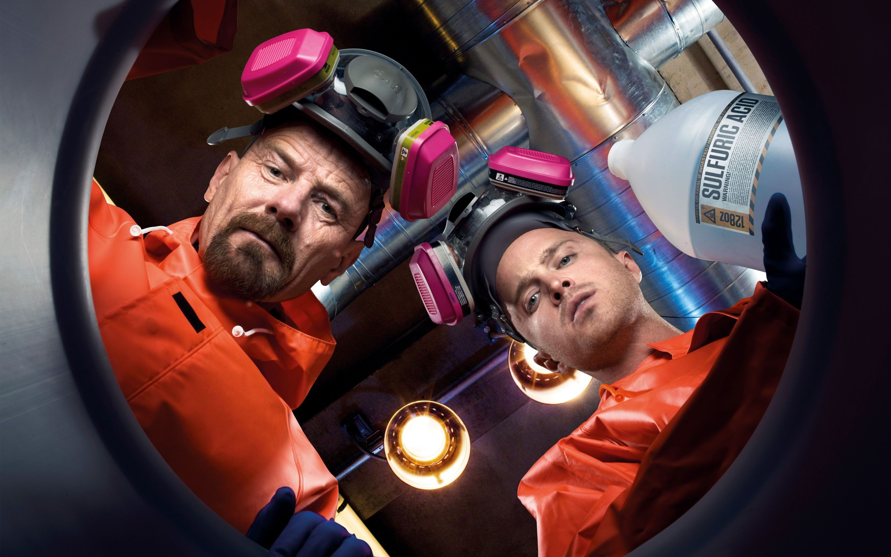

Noticias
Walter y Jesse en 'Better Call Saul': primeros detalles de un cameo que hará historia
Bryan Cranston y Aaron Paul volverán a meterse en la piel de sus icónicos personajes en la sexta y última temporada del 'spin-off' de 'Breaking Bad'.
La emoción por ver a Jimmy McGill siendo Saul Goodman es real, pero en los últimos días se confirmaba una importante noticia al respecto de la temporada 6 que se llevó todo el protagonismo: Walter White y Jesse Pinkman en persona formarían parte de las tramas de la temporada 6. Se trata de un cameo, pero la presencia en la ecuación de Bryan Cranston y Aaron Paul de nuevo en la piel de sus personajes en Breaking Bad supone un sueño hecho realidad tras haberse esperado durante años desde que el 'spin-off' comenzase en 2015. De momento no se han avanzado detalles demasiado concretos sobre la aparición de Bryan Cranston y Aaron Paul. Ni en qué episodio (o episodios) se producirá, ni la trama de la que formarán parte. Lo único seguro es que su participación ha sido catalogada como un cameo, por lo que no debemos esperar verles formando parte esencial de la historia, y ahora también unos primeros detalles compartidos por Paul, quien se muestra realmente encantado de poder volver a meterse en los zapatos de un personaje que tantos éxitos y buenos momentos le ha brindado en su trayectoria como actor.
PRIMEROS DETALLES DE UN CAMEO QUE HARÁ HISTORIA
El también actor de Westworld se ha pronunciado sobre su regreso al universo de Breaking Bad en declaraciones a The Hollywood Reporter, en una entrevista dedicada a la nueva película -Dual- que protagoniza junto a Karen Gillan. Tras confirmar que, efectivamente, volvería a ser Jesse Pinkman, Paul se mostró convencido de que su aparición iba a resultar realmente emocionante para los espectadores y reveló que su aparición sería completamente inesperada pese a que sepamos que va a producirse. Es inesperado. Siendo honesto, soy tan fan de 'Better Call Saul' que inicialmente no vi cómo lo iban a hacer. Pero, por supuesto, dejé que Vince, Peter y el resto de los guionistas encuentrasen la manera perfecta. Y es divertido. Creo que la gente va a estar emocionada Otro detalle casi asegurado es que, dad la línea de tiempo en la que transcurre Better Call Saul, los personajes aparecerán en un momento establecido durante las primeras temporadas de la serie original. La temporada 5 de la serie protagonizada por Bob Odenkirk transcurría cuatro años antes de que Pinkman y White comenzaran a trabajar juntos, por lo que es probable que la temporada 6 requiera algún tipo de salto en el tiempo.